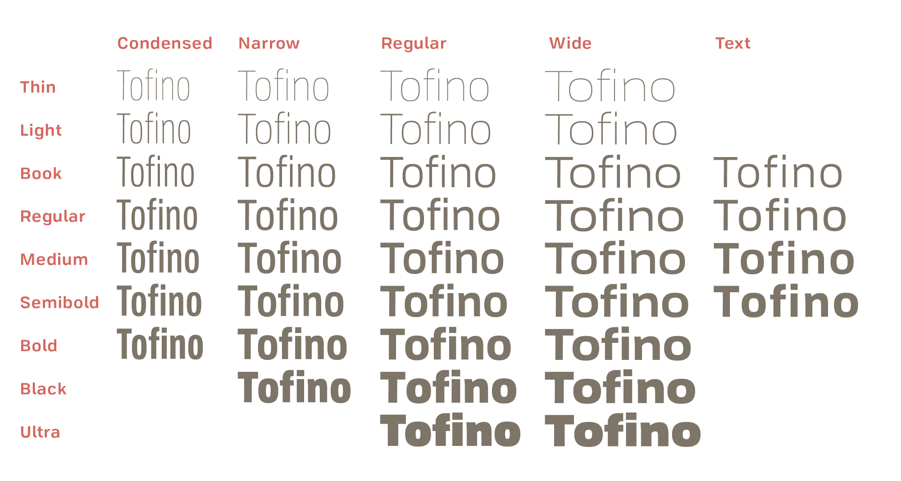
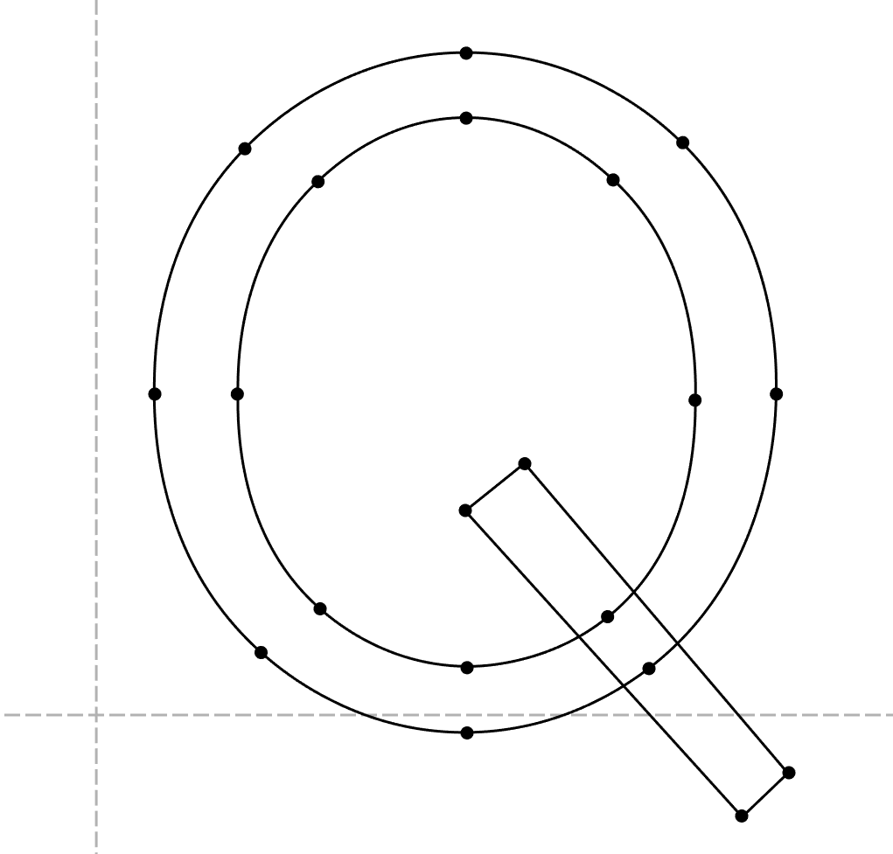
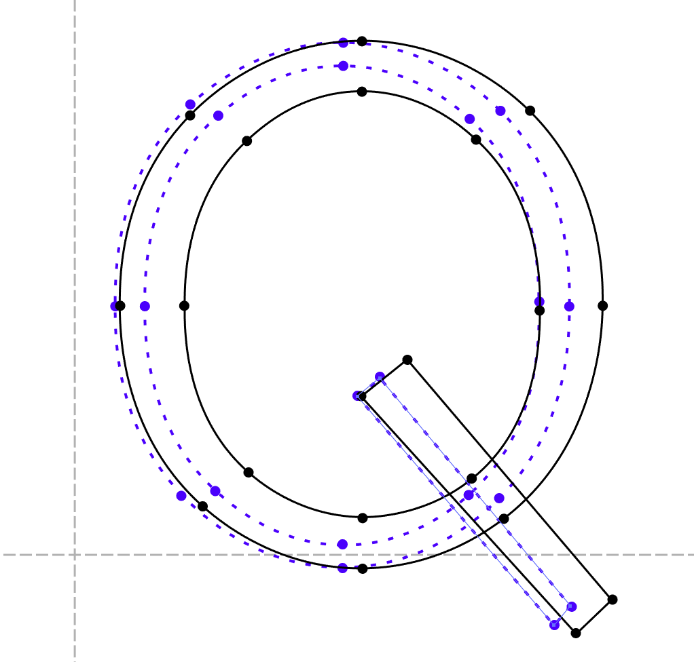

Myriad Pro <— Font family
- <— Faces
- Light
- Roman
- Bold
- Black
- Italic
- Condensed

Hello!
I’m Chris or @svgeesus
ex-W3C Technical Architecture Group
W3C Core Web Strategy
fi
character(s), glyph(s)
é
character(s), glyph(s), font(s)
@font-face {
font-family: Arvo; /* Descriptor */
src: url(fonts/s.woff); /* Descriptor */
font-weight: bold; /* Descriptor */
}
h1 {
font-family: Arvo; /* Property */
font-weight: bold; /* Property */
}First font with glyphs for a given character is used
Problem: avoiding bad Latin glyphs in Japanese fonts
@font-face {
font-family: Demo;
src: url(Latin.woff), url(Japanese.woff);
}Both fonts can’t be first!
@font-face {
font-family: 'Headings';
src: url(fonts/Japanese.woff);
unicode-range: U+A5, U+4E00-9FFF, U+30??, U+FF00-FF9F;
/* yen, kanji, hiragana, katakana */
}unicode-range: U+A5, U+4E00-9FFF, U+30??, U+FF00-FF9F;
I'm really sorry about the unicode-range syntax. :(
What was I thinking?!

 
| Axis tag | Name |
|---|---|
| 'ital' | Italic |
| 'opsz' | Optical size |
| 'slnt' | Slant |
| 'wdth' | Width |
| 'wght' | Weight |
/* select position on each axis */
font-variation-settings:
"wght" 2.4,
"wdth" .7,
"opsz" 32;font-weight: 400;
font-weight: calc(9 * 100);/* properties select position on each axis */
font-weight: 362; /* fairly light */
font-stretch: 70; /* condensed */
font-optical-sizing: auto| Axis tag | Name | Property/Descriptor |
|---|---|---|
| 'ital' | Italic | font-style |
| 'opsz' | Optical size | font-optical-sizing |
| 'slnt' | Slant | font-style |
| 'wdth' | Width | font-stretch |
| 'wght' | Weight | font-weight |

@font-face {
font-family: "Dunbar";
src: "dunbar.otf";
font-weight: 100 900;
font-stretch: 50% 200%;
font-style: -10deg 40deg;
}
h1 {
font-weight: 234;
font-stretch: 80%;
font-style: oblique 24deg;
font-optical-sizing: none;
}/* Supported Safari (TP 16+), Firefox 62 & Chrome 62 */
font-variation-settings:"wght" 2.4, "wdth" .7, "radi" .4;@keyframes expand {
from { font-variation-settings: 'wght' .3 }
to { font-variation-settings: 'wght' 3.1; }
}
This may be the most significant development for design on the web since responsive design itself
—Jason Pamental

Painter Kafeel

COLR holds stack of TrueType outlines
CPAL holds color palette(s)
Fronteers
SVG holds SVG graphics
CPAL holds color palette(s)
CSS 4 @font-palette-values to alter palette
Hello, Amsterdam!
Painter Kaffeel
features, variations, color(), palettes
COLR, SVG, sbix
@font-face {
font-family: "Sample";
src: url("smp-colr.otf") format(opentype supports color(COLR)),
url("smp-bw.otf") format(opentype);
}
CAPITALE FULGURANT
et modeste avec ça
INCROYABLE astrale
1234567890ABC
1234567890abj
font-variant-numeric: ;
1/2 3/4 5/8
13/27 86/483
font-variant-numeric: ;| 112,113.56 |
| 89,546.87 |
| 286,111.10 |
font-variant-numeric: ;INCROYABLE
flaneur
font-variant-ligatures: ;
Roman
Italic
Bold
font-synthesis:;font-family:;
JAVA Ta Wa
font-kerning:;letter-spacing:em;
block: ??
swap: ??
failure: ??
@font-face {
font-family: 'Foo';
src: url(foo.woff2);
font-display: auto;
}block: 3s
swap: ∞
failure: -
@font-face {
font-family: 'Foo';
src: url(foo.woff2);
font-display: block;
}block: 0s
swap: ∞
failure: -
@font-face {
font-family: 'Foo';
src: url(foo.woff2);
font-display: swap;
}block: 100ms
swap: 3s
failure: -
@font-face {
font-family: 'Foo';
src: url(foo.woff2);
font-display: fallback;
}block: 100ms
swap: 0s
failure: -
@font-face {
font-family: 'Foo';
src: url(foo.woff2);
font-display: optional;
}